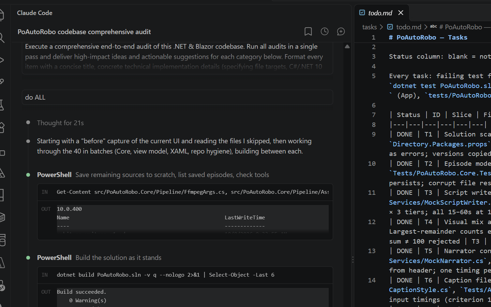
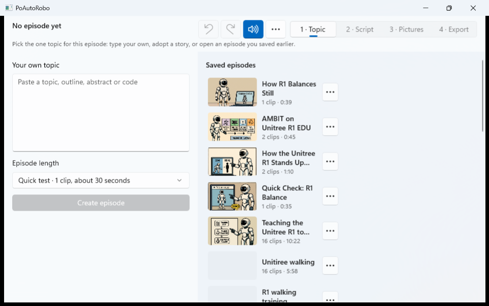
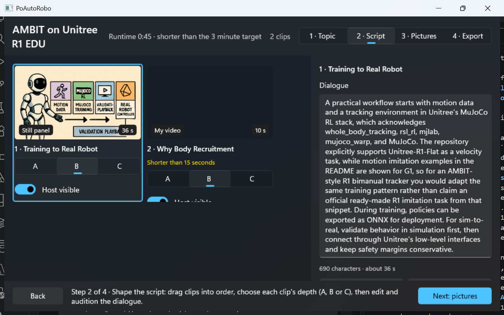
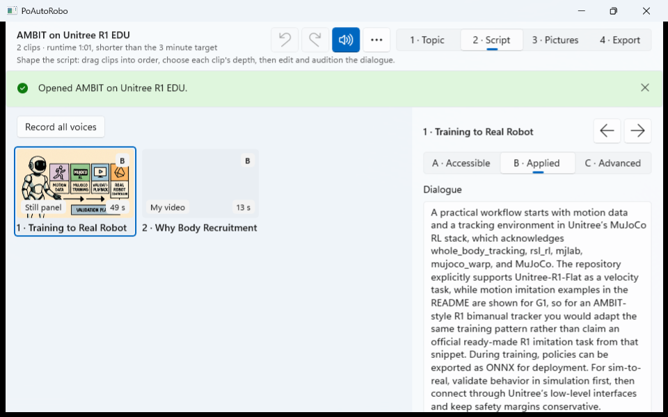
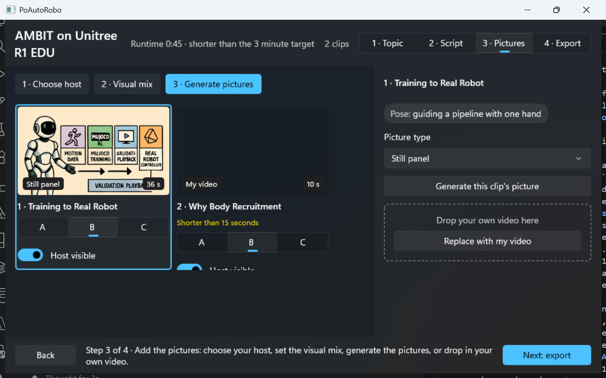
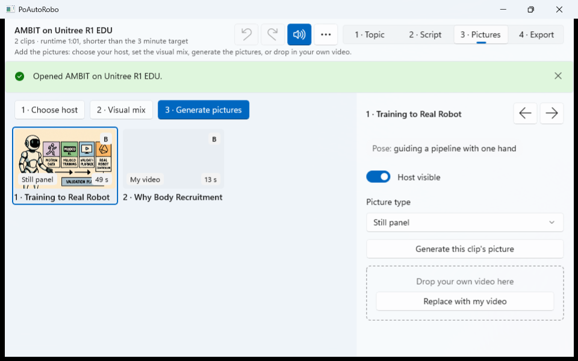
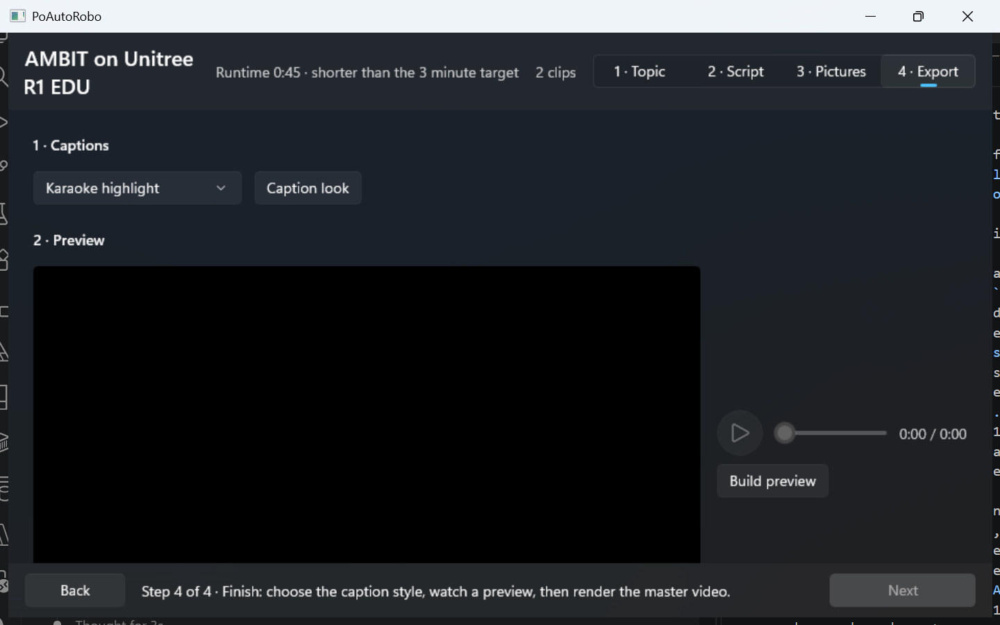
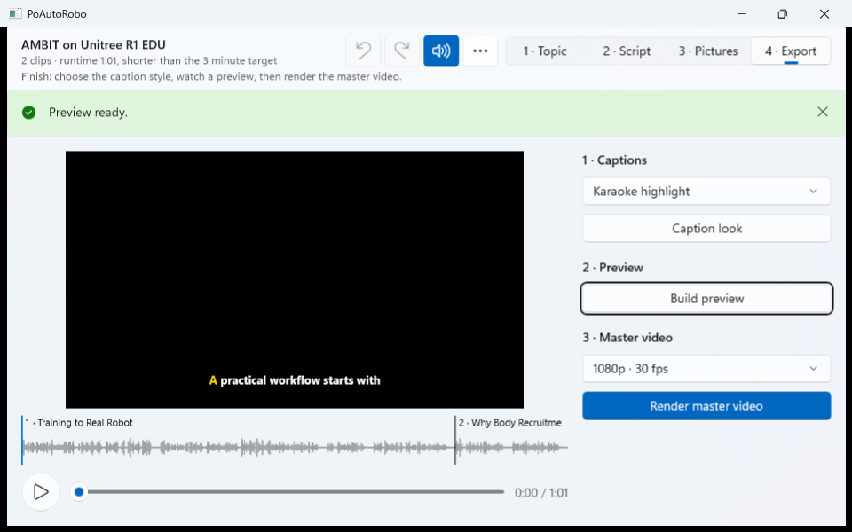
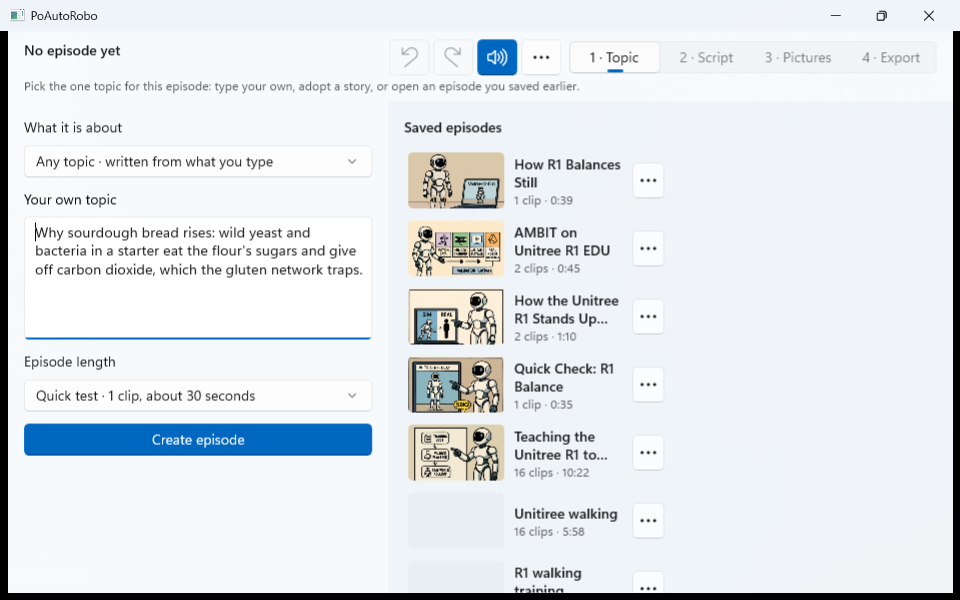

PoAutoRobo: before and after the 2026-10-08 audit changes
Both at the minimum window size (960 by 600). "Before" was captured on a dark Windows theme with the old fixed dark app theme; "After" follows the system setting, which was light at capture time. The numbered notes under each pair list what changed on that step.
1 · Topic
Before

After

Two columns: start something new on the left, saved work and the radar on the right; no scrolling to reach the radar
Saved-episode library with thumbnail, clip count and running time replaces the drop-down of folder names; each has Open, Make a copy, Show in File Explorer, Delete
Header carries Undo, Redo, sound switch and a menu; the footer with Back/Next is gone
The app now follows the Windows light or dark setting
2 · Script
Before

After

Compact cards: depth and voice-only shown as badges, so three fit across where two did
Depth selector, sources list and inline dialogue warnings moved into the inspector
Move earlier/later are arrow buttons beside the clip title (Alt+Left / Alt+Right)
Header line shows clip count, measured running time and picture spend
"Record all voices" button; result messages now appear on every step
3 · Pictures
Before

After

Host on/off switch moved from each card into the inspector
A spinner covers a card while its picture is being drawn
Single-clip Generate is disabled while a batch runs
4 · Export
Before

After

Preview scales with the window; the page no longer scrolls at the minimum size
Waveform with a mark and title at each clip start; click to jump
Captions, preview and master-video controls sit in one panel beside the preview
"Show in folder" appears after a render, which now also writes chapters, subtitles and a thumbnail
1 · Topic, with the subject choice (added later the same day)
BeforeAfter

New "What it is about" list above the topic box: Unitree R1 (the default) or Any topic
With Any topic chosen the radar heading reads "popular today" and lists today's Hacker News front page instead of R1 stories